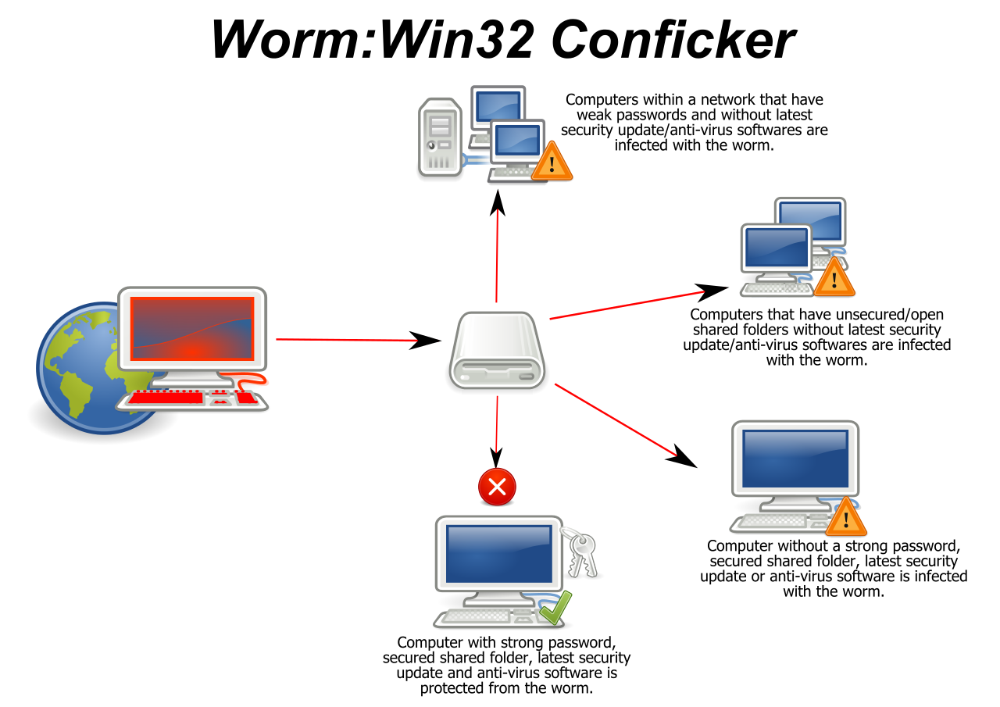

Un worm (letteralmente "verme") è una particolare categoria di malware in grado di autoreplicarsi. È simile ad un virus ma, a differenza di questo, non necessita di legarsi ad altri eseguibili per diffondersi ma si diffonde spedendosi direttamente agli altri computer, ad esempio tramite e-mail o una rete di computer.
Il principale mezzo di propagazione di uno worm `e la rete(infezione network-oriented)
non necessitano di un host da infettare, ma si propagano come programmi standalone
distinguiamo in 2 categorie :
active worms non richiedono l’intervento dell’utente per la propagazione (exploit)
email worms richiedono una qualche azione dell’utente (propagazione più lenta)
Tecniche di propagazione:
1) e-mail (social engineering, sender spoofing, . . . )
2) sfruttamento di backdoor preesistenti (es.W32/Nimda → CodeRed ii, W32/Borm → Back Orifice) (no intervento utente!)
3) propagazione tramite reti P2P (aggiunta ai file in sharing o infezione di file condivisi)
4) diffusione tramite instant messaging (es. mIRC /DCC, MSN, . . . )
5) bluetooth
6) file server
7) vulnerabilit`a in applicazioni (no intervento utente!)
